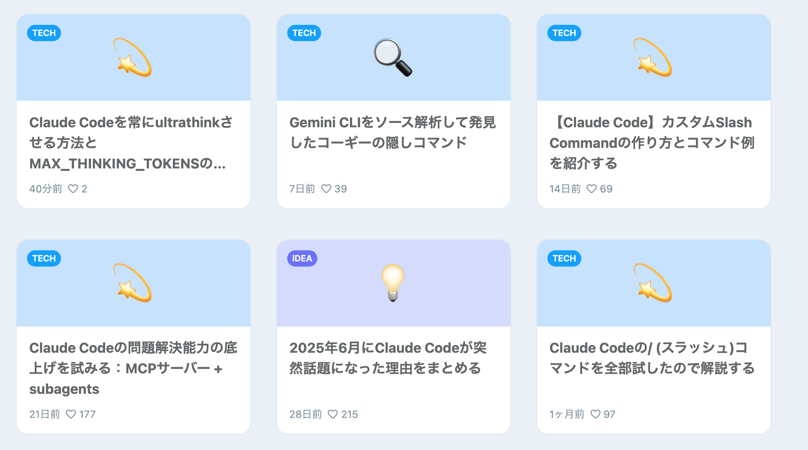

Who are you?
Oikon
某外資IT企業, R&D, SW製品開発
エンジニア歴6年
趣味でツール弄りや個人開発してます
Claude Codeの発信多め（Zenn, 𝕏のハイライト）
𝕏:@gaishi_narou
今回話すこと
対象: 初学者
Claude Codeを使ってみたい・使い始めた方

話す内容
X の "CLAUDE CODE 10x productivity workflow" のアレンジ
- 1. IDE(VSCode, Cursor)統合
- 2. Planモード (Shift + Tab 2回)
- 3. CLAUDE.mdのメンテナンス
- 4.
/clearによるコンテキストの浄化 - 5.
Thinkの拡張 - 6.
permissionsの設定 - 7. 最新知識・ドキュメントのInput
- 8. Task (subagent) の活用
- 9. +α: Hooksの活用
+α: Hooks の活用
7月1日に追加された新機能！
Claude Codeのアクションを検知して、事前に決められた動作を、指定のタイミングで行う機能。
導入のメリット:
- 必ず実行してくれる（=ルールを守らせる）
- コンテキストサイズの縮小
- 拡張性の向上
すぐ導入できる例：
afplay /System/Library/Sounds/Sosumi.aiff